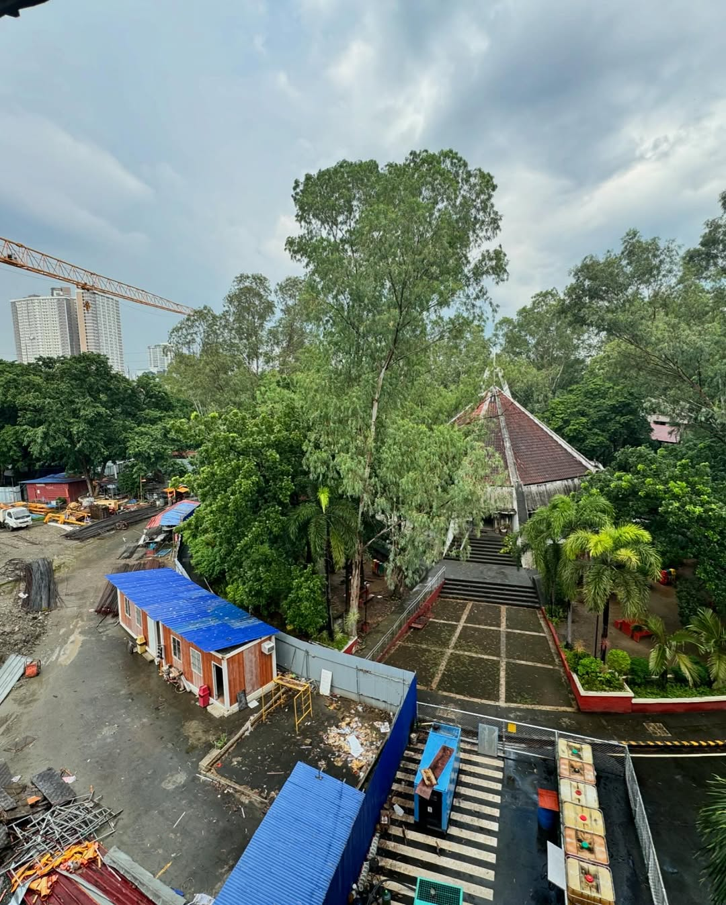
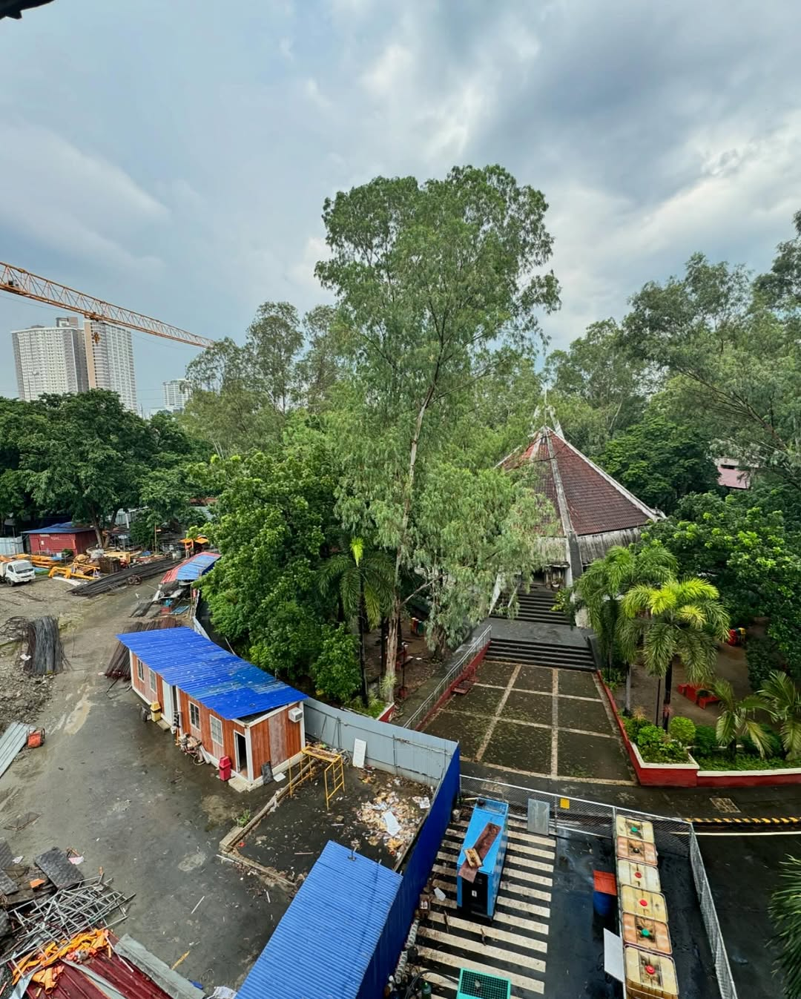

The Inter-Faith Chapel at the PUP A. Mabini Campus is a dedicated ecumenical space designed to honour the diverse religious traditions of the university community. Positioned on the eastern portion of the campus, its architecture features a distinctive rounded form that invites contemplation and spiritual unity.
Significance and Features:
- It offers a serene retreat for students, faculty, and staff—serving as a venue for reflection, prayer, meditation, multi-faith services, and campus worship activities.
- One notable feature is a “prayer wall” at the entrance where individuals may write wishes or dreams on coloured paper and post them, symbolising hope and community across faiths.
Key Notes:
- The chapel was constructed as part of PUP’s campus expansion in the late 1970s — records indicate that in 1979 the Inter-Faith Chapel, along with other major campus structures, was completed on the Sta. Mesa site
- While specific floor-area figures are not widely published, the chapel is situated within the 10.71-hectare A. Mabini Campus, which hosts the core academic buildings and services of PUP.
Other Images:
 
